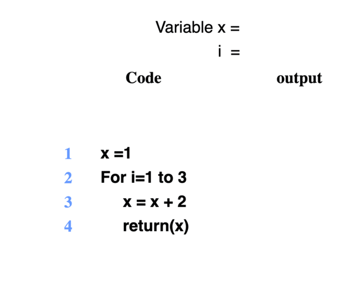
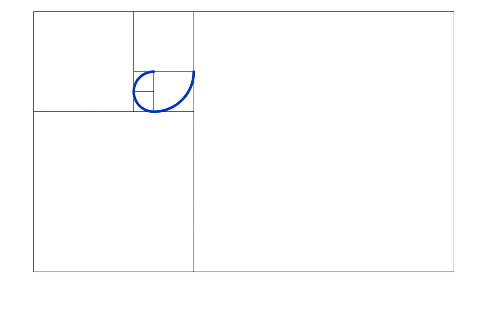
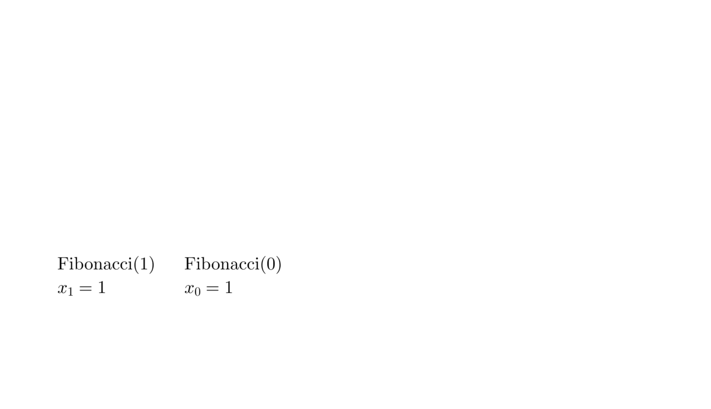
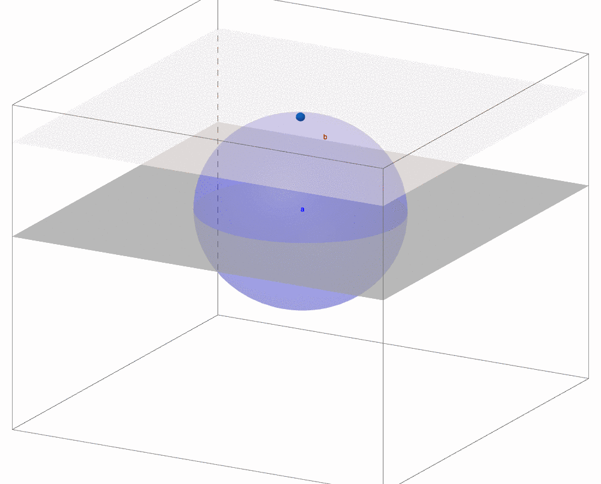
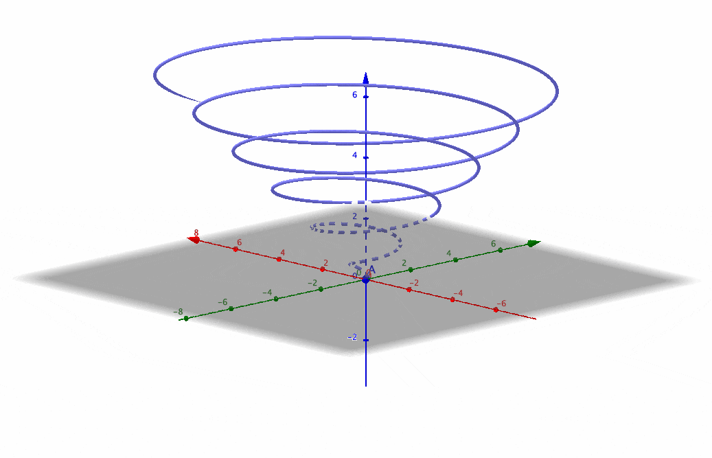

From logic, sets, to axioms, we have seen a way of representing knowledge in terms of modular concepts. The knowledge resides implicitly in the axioms and logical rules and explicitly appears as logical inferential results. Propositions and quantifiers connect the expressions that contain the knowledge, which then represented by sets and functions, and finally form the deductive conclusions in this axiomatic system. In other words, the knowledge is encoded in the axioms and is deciphered piece by piece in our deductions. This deduction procedure elucidates a routine of climbing. Like on a ladder, we start to climb from the bottom (axiom or basis) and then climb up from each step to the next one (recursion or deduction). With such a ladder (system), it seems that we can infer as far as we can climb.30 The contrary effect is that if one axiom is rejected by pieces of evidence or theory from an external framework not covered by the axiom, then all sorts of materials built on this axiom would have to be rewritten, just like a sequential effect of falling dominoes.
There are various schools of thought concerning the best way to represent and manipulate knowledge. This automatic reasoning mechanism, although it contradicts some sides of human intelligence, such as intuitive awareness of analogies, has had proved its success and importance in modern times. Its philosophy is to start with concepts by postulation and then to deduce connections for the distinct objects. On the other hand, those philosophies, like Chinese philosophy, which are accustomed to start with intuitions and to value the indistinct analogies, cannot initiate such a type of epistemology. “Words are for holding ideas, but once the idea is received, the words are not needed anymore” is often said by Chinese. Oriental expressions appreciate allusions and prefer indistinct but unlimited ideas. It resulted that the ancient inferential system in the Chinese culture was not formed by the deductive reasoning but by indistinct empirical inductions.
Both empirical induction and logical deduction are essential as a source of knowledge. An empirical induction has less cogency than a deduction because the proposition in the empirical induction is probabilistic rather than deterministic. Therefore, it is hard to reach a firm and unambiguous conclusion. However, an induction can create new knowledge beyond a restrictive axiomatic framework while deduction cannot. Almost all crucial inferences outside logic and mathematics are, in some sense, empirical inductions. Many of these inferences give positive feedbacks to the development of mathematics and logic. Darwinian evolution theory, for example, was proposed by first noticing what is self-evident and then by using deduction. Quite often, the axioms and inference rules which are proved to be true in the actual space appeared first in human’s commonsense. When the discussion about inference goes beyond logic and mathematics, two sides of the coin, empirical induction, and logical deduction, should both be weighted. After all, the knowledge of inference is of what becomes, not of what is.
Boole’s laws of thought, essentially the propositional calculus, took the first step towards Artificial Intelligence (AI). The first generation of modern computers appeared for massive code-breaking during WWII. One of these computers was designed by Alan Turing, who established the theoretical foundation of computation. Turing’s theory of computation showed that any form of computation could be described digitally. The close relationship between Boole’s laws and Turing’s theory suggested that any implementable calculation can conduct AI inferences.
This type of AI inferences is highly dependent on computation. Forecasting weather and predicting eclipses are merely some algorithms computing the solutions of some physical models. If the computer acquires more computing power, it will provide more stable, more precise, and more efficient inferential results. Although there is no creative thought flow in the physical hardware, the routines and the data empower computers to model higher-level abstractions and exploit deeper structural information.
Nowadays, AIs are ready to participate in many tasks previously performable only by humans. To understand the inferential procedures conducted by AIs, we need to understand the operational routines of the computer. Mostly the vital process is implemented by an algorithm. Knowledge for AIs is implanted into computer programs, and then it is transmitted into pieces of data that are accessible by various algorithms. An algorithm is a specific set of instructions for performing a particular computation with numerical or symbolic information. Just like functions, algorithms have inputs and outputs. Inputs tell the algorithm what is the information to work with and outputs describe the algorithm to produce new information. Variables give the information stored for use during the execution of the algorithm. At each step of an algorithm, the next operation to be performed must be completely determined by the current state of the variables. An algorithm must always terminate after a finite number of steps.
Pseudo code is commonly used in mathematics and computer science to present an algorithm. The code is similar to any specific programming language since all programming languages are designed to express algorithms. The syntax of pseudo code, however, will not be as rigid as that of a programming language. Here is an example of an algorithm computing the following sequence \(x_{i+2}=x_{i+1}+x_{i}\) for \(1\leq i\leq100\). This sequence is called the Fibonacci sequence. The initial inputs are \(x_{1}=1\) and \(x_{2}=1\). We will use the algorithm to compute the output \(x_{100}\).
Figure 4.1: A simple illustration of FOR loop
Pseudo Code
1: Constants \(x_{1}\leftarrow1\), \(x_{2}\leftarrow1\), \((x_{i})_{2\leq i\leq100}\in\mathbb{N}\) 2: Variable \(i\leftarrow1\), \(i\in\mathbb{N}\) 3: FOR \(\forall i\in[1,98]\) DO 4: \(\qquad\) \(x_{i+2}\leftarrow x_{i+1}+x_{i}\) 5: \(\qquad\) \(i\leftarrow i+1\) 6: END FOR LOOP 7: RETURN \(x_{100}\)
The inputs \(x_{1}\) and \(x_{2}\) and the output \(x_{100}\) of this algorithm are given in symbolic names in mathematical notations. We also need to pay attention to the type of information stored by the inputs, outputs, and variables. In line 1, the algorithm assigns the natural numbers \(1\) and \(1\) to \(x_{1}\) and \(x_{2}\), respectively. The values of the sequence \((x_{i})_{3\leq i\leq100}\) are unknown yet, but they must belong to natural numbers. The index \(i\) is a variable in \(\mathbb{N}\) with an initial value \(i=1\). The change of \(i\) should satisfy the operation in \(\mathbb{N}\). For example, \(i+0.5\) is not a valid operation, because for \(i=1\), \(i+0.5=1.5\) is not in \(\mathbb{N}\).
From line 3 to line 5, the algorithm is computing the sequence. The indented format in fourth and fifth lines stands for the execution of a repetitive loop. Most algorithms use two special structures to construct a series of instructions, a repetition structure or a branching structure.
Repetition structure: FOR each \(s\in\mathcal{S}\) DO <action>. The syntax gives the instruction “perform the indicated action for each object \(s\in\mathcal{S}\).” <action> is a series of instructions. The set \(\mathcal{S}\) is a finite set of objects, and the action depends on the specific value of \(s\).31 There are other types of repetition structures, but they are quite similar. FOR loops, perhaps, is one of the most general and most frequently used structures.
Branch structure: IF <condition> THEN <action 1> ELSE <action 2>. The syntax gives the instruction “if the condition is true at the time the IF is reached, action 1 is performed (once only), otherwise action 2 is performed (once only).” <condition> is a logical assertion that is either true or false.32 The IF-THEN-ELSE structure can be extended to IF <condition 1> THEN <action 1> ELSE IF <condition 2> THEN <action 2> ELSE <action 3>. In the new structure, when <condition 1> is true, the algorithm will take <action 1>. If <condition 1> is false, then the algorithm will make another logical assertion for <condition 2>. It will execute <action 2> if the <condition 2> is true, otherwise it will take <action 3>. For example, if \(f(x)=1\) for \(x>0\), \(f(x)=-1\) for \(x<0\) and \(f(x)=0\) for \(x=0\), then we can use this extended structure to define \(f\); because there are three assertions for \(x\) rather than a binary assertion true or false. Similarly, we can extend IF-TEHN-ELSE to the case with four assertions, etc.
In our pseudo code, since the instruction of the computation is simply a repetition of \(x_{i+2}=x_{i+1}+x_{i}\) from \(i=1\) to \(i=98\), we can use the FOR loop to compute \(98\) repetitions. In each repetition, the index \(i\) of the sequence \((x_i)_{1\leq i\leq 98}\) changes by one unit, i.e. \(i=1\), \(x_{3}=x_{2}+x_{1}\) then \(i=2\), \(x_{4}=x_{3}+x_{2}\). So after executing the instruction, the algorithm also needs to increase the index number by one unit. The assignment \(i\leftarrow i+1\) simply is the successor function of the natural number \(i\), replacing the original value \(i\) with \(i+1\).
At the \(98\)th repetition, \(i=98\), the instruction \(x_{100}\leftarrow x_{99}+x_{98}\) assigns the computed value to \(x_{100}\), and the computation finishes. Finally, we only need the algorithm to report the result of interests, namely the value of \(x_{100}\). The final line tells the algorithm to store only the constant value \(x_{100}\) as the output. It also means the other values, \((x_{i})_{1\leq i\leq99}\) will be erased after executing the whole algorithm.
The structure of this algorithm is closely related to recursion form in section 3.3. While the underlying function \(f(\cdot)\) of the Fibonacci sequence is not given to the computer, but the sequence per se reveals the exact values of \(f(\cdot)\) by the simple repetition instruction from the algorithm. Without the aid of computers and algorithms, computing such a sequence requires a great amount of effort. For example, when \(i=20\), the value is \(x_{20}=6765\), but when \(i=30\), the value becomes \(x_{30}=832040\), and when \(i=100\), \(x_{100}\) is about \(3.5\times10^{20}\). The sequence induces an extremely fast growth. It turns out that these growth patterns relate to an invariant numerical value that is philosophically important. The following section provides some illumination of appreciating the knowledge embedded or encoded in the numbers and algorithms.
A function is called an exponential growth function when the functional form follows \(x(i)=ab^{i}\) for some constants \(a>0\) and \(b>1\). If \(a>0\) and \(0<b<1\) then the function is an exponential decay function. Although we haven’t seen the underlying function of the Fibonacci sequence, we can use a computer to evaluate the discrete values \(x_i\) from the Fibonacci sequence.
R Code
The growth ratio of an exponential growth function is controlled by the ratio \(x(i+1)/x(i)=b\) for \(i\in\mathbb{N}\), which converges to a constant number for large \(i\). For the Fibonacci sequence, the ratio \(x_{i+1}/x_{i}\) approximates to a constant value \(\phi=(1+\sqrt{5})/2\approx1.618\) when \(i\) is getting larger. It implies that when \(i\) is large, \(x_{i+1}\) can be approximated by \(x_{i}\phi\), \(x_{i-1}\phi^{2}\), etc. For example, \(x_{20}=6765\) is roughly approximated by \(x_{8}\phi^{12}=6761.935\). The approximation function \(x(i)\approx21\phi^{i-8}\) for \(i>8\) is an exponential growth function so Fibonacci sequence is an exponential growth sequence.33 The exact function expression of the Fibonacci sequence \[ x(i)=\frac{\phi^{i}-(1-\phi)^{i}}{\sqrt{5}},\] is more complicated than this approximating form. As the term \((1-\phi)\approx-0.618\) implies that \((1-\phi)^{i}\) is getting smaller as \(i\) increases, we can see \(x(i)\approx\phi^{i}/\sqrt{5}\) is indeed an exponential growth function.
The ratio value \(\phi\) is called the golden ratio. This ratio can be found in various natural places such as the human body, flowers, or even veins in leaves. And it has been applied in the ancient, medieval, and modern designs, arts, and architects because the ratio is believed to endow an esthetically pleasing proportion to the objects. For example, the basic musical scale is built on the Fibonacci sequence, and the golden ratio frequently appears between the tones in the chord structure. This unexpected link between aesthetics and numbers reveals one of the links for the harmony of the real world and the imaginary one.
Figure 4.3: Golden Spiral
How can a ratio be aesthetic? Beauty is hard to be defined in a specific way, given its mere existence in one’s mind and given that each mind forms subjective taste over objects. The nature of beauty is amongst the most controversial themes in philosophy. On the other hand, beauty is also a fundamental theme in philosophical aesthetics. The intrinsic objective themes of the world, including ultimate values, goodness, truth, and justice, all arise with beauty. Beauty paves a way to integrate natural and spiritual objects and to ascend the abstract ladder. “The chief forms of beauty are order and symmetry and definiteness, which the mathematical sciences demonstrate in a special degree,” said by Aristotle in the book Metaphysics.
As the ancient formula of beauty discloses, our aesthetical senses arise from our ability to perceive similarities and differences. The order relies on both: the ability to distinguish one object from the others (anti-symmetricity) and the ability to associate them (transitivity, connexity). It is a unity in diversity. The golden ratio is a specific type of the defined “order,” an action of distributing two elements in a harmonic disposition. The formula \(x_{i+2}=x_{i+1}+x_{i}\) persisting a growth rate at the golden ratio is one of the simplest recursive formulae. If the natural of beauty depends on a matter of instantiating definite proportions or relations among objects and a matter of reliably reproducing its objective proportions, then the simplicity of Fibonacci sequence implies that the golden ratio is possibly the beauty of the growth, an intrinsic order of simple growing phenomena. Therefore, it comes as no surprise (to me) to find such a ratio universal and universally beautiful.
The first few numbers from the Fibonacci sequence \(1,1,2,3,5,8\) also have their meaning in Chinese philosophy. Many Chinese believe Dao (or the first principles) as the unconditional and unknowable source that guides all the other principles.34 In philosophy, law, and theology, the first principles refer to those principles derived from authoritative statements or from the statute books or the scriptures that are unquestionable. To them, Yin and Yang are two fundamental elements created by the initial Wuji, namely nothingness or emptiness, and Taiji, namely infinity. Heaven, earth, and men, representing three basic elements, are said to be created throughout the interplays between Yin and Yang. After creations, all things in the universe are dominated by five types of energies. Finally, eight divinatory symbols are used for inferring the endless change and evolution of life in one of the oldest Chinese classic texts I Ching or called Book of Change. The numbers associating with creations, terminations, and movements represent how harmony can be achieved in an oriental aesthetic ladder.
We have seen the sequences and the use of sequences. The sequence discloses a remarkable link with the movement, the change, the evolution, and all sorts of forms with dynamical features. As the natural number \(i\in\mathbb{N}\) plays the role of indexing the sequence, and as the successor function controls the index, any sequence has only one-way direction. The one-way direction is also posited as a concept of the arrow of time - the idea raised in physics to distinguish from time reversal symmetry processes in the microscope. The time symmetry means that the behavior of a sequence \((x_{1},x_{2},\dots x_{t})\) starting at time \(1\) coincides with the action of a particular sequence \((x_{t},x_{t-1},\dots x_{2},x_{1})\) whose index starts at time \(t\) but goes back to \(1\). The direction of the order, ascending or descending, does not matter for the physical series. However, the time symmetry is broken in the macroscope. Only the sequence with the arrow of time, namely the ascending order, remains valid. That’s why sequences can represent the phenomena of growth regarded as time-dependent processes. The sequence whose index refers to time is often called time series.
Although time has long been an essential subject of study in religion, philosophy, and science, the concept of time is rather ambiguously defined in all these disciplines. Aristotle, for example, rejected the existence of time; instead, he considered time as a numeration of motion. Time in physics nowadays is characterized by a fundamental physical unit, and the unit of time is indeed used for defining quantities of motion, such as velocity and acceleration. However, the movement of the clock or the unit of time cannot give us the meaning of time itself. In Buddhism, time is often considered as an illusion rather than a tangible something. Gottfried Leibniz and Immanuel Kant also thought time as an unmeasurable thing and as a thing beyond any substance or element. Issac Newton believed in the relation of the absolute space and the absolute time, which we will discuss in section 4.5.
Figure 4.4: Tree plot of Fibonacci sequence
It would be better to detour the discussion about time for the moment. In a secular view, most people must be more interested in the effects caused by time, not the time per se. Motion is such an effect. It is intuitive and observable. The consequences of motion are presumably measurable. The study of forces and their outcomes on motion refers to dynamics. Fibonacci sequence, for example, can describe such a dynamical process. Fibonacci, in his book Liber Abaci, described his sequence based on a dynamical population model of rabbits. The tree plot in figure 4.4 describes this dynamic.35 Rabbits can mate, and a female can produce another pair of rabbits at the end of one month. Suppose the female always produces one new pair (one male, one female) every month since the second month. At the end of the first month, two rabbits mate, but there is still one pair in the field. At the end of the second month, the female produces a new pair, so now there are two pairs in the field. At the end of the third month, the original female produces a second pair, making three pairs in all in the field, and the pair born in the second month can mate. At the end of the fourth month, the original female has produced yet another new pair, the female born two months ago produces her first pair, making five pairs in total. The mating of all female rabbits causes exponential growth. The offsprings grow up and product new offsprings, meanwhile all existing female rabbits also product - the accumulation of production results from the exponential growth. The golden ratio in this example is due to the stable frequency of breeding.
Another simple exponential growth function is factorial. The factorial of a natural number \(n\), denoted by \(n!\), is the product of all natural numbers less than or equal to \(n\) such that \[n!=n\times(n-1)\cdots\times2\times1.\] It is easy to found it grow exponentially, as \(20!\approx2.4\times10^{18}\). It defines the exponential base \(\mbox{e}\): \[\mbox{e}=\sum_{n=0}^{\infty}\frac{1}{n!}=\frac{1}{1}+\frac{1}{1}+\frac{1}{2}+\frac{1}{6}+\frac{1}{24}\cdots.\] Any power of this exponential base is a power series \[\mbox{e}^{t}=\sum_{n=0}^{\infty}\frac{t^{n}}{n!}\] called the exponential function of \(t\). Exponential function perhaps is one of the most critical functions in mathematics. It is also the function that can disclose several eternal properties of the dynamics. One reason is that exponential function \(\mbox{e}^{t}\) is invariant to the infinitesimal difference with respect to its argument \(t\). We can think \(t\) as time. For any infinitesimal time increment \(\epsilon\), the exponential function \(\mathrm{e}^{t+\epsilon}\) can be expanded as \(\mathrm{e}^{t+\epsilon}\approx\mathrm{e}^{t}+\mathrm{e}^{t}\epsilon\).
Proof
An infinitesimal difference of \(f(t)=\mbox{e}^{t}\) with respect to the time \(t\) \[\begin{equation} \begin{split} \frac{f(t+\epsilon)-f(t)}{\epsilon}& =\frac{\mbox{e}^{t+\epsilon}- \mbox{e}^{t}}{\epsilon} \\ & \approx\frac{\mathrm{e}^{t} +\mathrm{e}^{t}\epsilon-\mathrm{e}^{t}}{\epsilon} =\mathrm{e}^{t}=f(t), \end{split} \tag{4.1} \end{equation}\] is in fact the exponential function itself. The ratio \((f(t+\epsilon)-f(t))/\epsilon\) is the slope between two points \((t,f(t))\) and \((t+\epsilon,f(t+\epsilon))\). So the above result says for any two close points, the slope of the exponential function is the function itself. There is no other exponential type function that is precisely an infinitesimal difference of its own. The size of the function increases, but its shape is unaltered because the slope is the same as the function, a property known as self-similarity. Golden spiral in the figure 4.3 is self-similar. Many self-similar phenomena can be characterized by the formula involving the exponential term. We will see more examples of self-similarity. For now, we can almost induce that exponential function plays an essential role in the growth because imitating self-similar patterns seems to be a simple choice for reproduction. The forthcoming examples in chapter [?] will validate this induction.
The infinitesimal calculus in the equation (4.1) was proposed by Leibniz and Newton. Just like the first-order predicate logic, the infinitesimal quantity \(\frac{f(t+\epsilon)-f(t)}{\epsilon}\) is a first-order property for the function \(f(t)\). The argument \(t\) is treated as time because time allows infinitesimal changes, unlike the natural numbers. But this setup brings in one kind of reasoning at which the standard predicate logic is really bad, the reasoning about time. In the predicate logic, if something is true, then it is always true. There is no notion of time. There is no good way to say in predicate logic that it is true now, but it will not be true later.36 One can add a time parameter to every predicate, but it is still difficult to define a form with those ambiguous time points, such as the eventual time. It is possible to write a predicate that takes another predicate as a time parameter in order to define a sequence towards the eventual time, just like how the successor function of natural numbers works. But this parameterization will switch the first-order logical structure to a second-order one. An alternative way is to define a new type of logic, called the temporal logic, where the statements always come with a pair of temporal quantifiers. Since all these efforts mean a deviation from first-order predicate logic, they are beyond our current scope. In our example of \(\mathrm{e}^{t}\), we’ve introduced time \(t\), but we don’t expect the functional form will be different at a different value of \(t\). The function has to be always an exponential function \(\mbox{e}^{t}\) for any \(t\).
So we cannot completely detour the discussion of time if we want an in-depth vision about the dynamics. The role of time in Leibniz and Newton’s mathematical analyses is the argument of the function. The dynamical phenomena are recorded by time, like functions being evaluated at their arguments. Time itself does not change the functional forms, nor distort the movements either. This way of modeling time is now known as determinism. Alternatively, if time is viewed as a form of characterizing lives or minds, then the dynamical process, described by a function of time, becomes an ensemble activity consisting of many participants. In the latter case, time \(t\) is not the sole argument determining the dynamics. Time is merely a medium through which numerous individual minds converge, collude, collide, and finally agglomerate.
Pierre-Simon Laplace believed in a deterministic universe. He wrote “an intelligence knowing all the forces acting in nature at a given instant, as well as the momentary positions of all things in the universe, would be able to comprehend in one single formula the motions of the largest bodies as well as the lightest atoms in the world, provided that its intellect were sufficiently powerful to subject all data to analysis; to it nothing would be uncertain, the future as well as the past would be present to its eyes.”
The universe could be viewed as a deterministic equation if time is just an argument of this equation. One could construct an evolutionary system from \(f(0)\) to \(f(T)\) for a temporal argument \(t\in[0,T]\). And one could also design a reverse process from \(f(T)\) to \(f(0)\) so that the system could perform the exact process in a degeneration manner, a plausible implication for the possibility of a perfect predictor.
On the other hand, St. Augustine of Hippo thinks that time somehow connected to the mind. Henri Bergson developed this idea and regarded time as the form where the ego can live. This idea is similar to the motivation of the first cause of the motion by Aristotle. For any motion, Aristotle believed that there must be something that originates the motion, and this something must itself be unmoved and must be eternal, substance, and actuality. In Fibonacci’s rabbit population model, this cause is the instinct of breeding. In the context of the universe, this unmoved mover is not definable; it may be named God, fate, or love, etc. Regardless of the specific name, it must be a timeless object that directly causes the motion. In the view of Bergson, this ultimate source of all movements is the will. Bergson (1913) thinks the will as a conscious force, like an exponent in algebra. Unlike the determinism seeing the change from \(\mathrm{e}^{t}\) to \(\mathrm{e}^{t+\epsilon}\) as the realization of the function \(f(t)=\mathrm{e}^{t}\), Bergson views that multiple types of forces are in front of \(\mathrm{e}^{t}\) for pointing the direction of the process from \(t\) to \(t+\epsilon\). These forces are creating bifurcating paths, but the free will or free act takes the path \(\mathrm{e}^{t}+\mathrm{e}^{t}\epsilon\) which makes the growing path look like a realization from an exponential function. In other words, the function \(f(t)=\mathrm{e}^{t}\) is generated by the will, and the will concretizes the function throughout time. With this idea, we can also interpret the choice of reproducing a self-similar pattern according to \(\mathrm{e}^{t}\) is the will of simplicity.
The interpretation of free will is incompatible with determinism. For determinism, the world can have a perfect predictor, and the retrocausality can occur. If a person truly knows the future, and that knowledge affects their actions, then events in the future will be causing effects in the past. The current decision will have already caused the predictor’s action. Based on this argument, we may even conclude that if time machines or perfect predictors can exist, then there can be no free will, and choosers will do whatever they’re fated to do. Thus in the deterministic world, the feeling that one is free to choose an action is simply an illusion. We come to an old contention that free will and determinism are incompatible since determinism enables the existence of perfect predictors.37 Time machines and time travelings also somehow contradict with the free will, because a time machine could be used as a mechanism for making a prediction. Consideration of the possibility of backward time travel in a hypothetical universe was described by Kurt Gödel, who also asserted that time might itself be a sort of illusion.
While libertarianism welcomes the concept of free will, physical determinism implies there is only one possible future and is therefore not compatible with libertarian free will. We have to agree that non-physical mind, will, or soul cannot directly cause the physical causalities, at least so far. For example, most control processes in engineering are entirely determined. The will in a machine signifies nothing but a power, or ability, to proceed. The modern capital-intensive industry highly depends on automatic, mechanical, and digital controls. We should avoid being blind to this big success achieved by the control theory.
Here is a sketch of the control theory. Consider a dynamical system that is subjected to the influence of one or more inputs, denoted by a function \(u(t)\) with a time argument \(t\). These inputs are adjusted according to the internal states of the system in order to produce the necessary outputs. Let a function \(x(t)\) characterize the state information, and let another function \(y(t)\) characterize the outputs. This system looks like a function \(f(\cdot,\cdot)\) mapping the inputs and states to the outputs:38 If the system is only observed at \(t=1,\dots,T\), then we have sequences \((y_{t},x_{t},u_{t})_{t=1,\dots,T}\), instead of functions. The system becomes \(y_{t}=f(x_{t},u_{t})\) for \(t=1,\dots,T\). \[y(t)=f(x(t),u(t)).\] If this dynamical system is controllable, then there will be a state transition function \(\phi(\cdot)\) for any two states \(x(t_{0})\) and \(x(t_{1})\) controlled by the input \(u(t)\) such that39 A general control function should also index the starting time \(t_{0}\) and ending time \(t_{1}\) for the transition. The formal form of \(\phi\) is \(\phi(x(t_{0}),\, u(t),t_{0},t_{1})=x(t_{1})\). \[\phi(x(t_{0}),\, u(t))=x(t_{1}),\,\mbox{ for }t\in[t_{0},t_{1}].\]
The initial state \(x(t_{0})\) under some following input \(u(t)\) is controlled to change to the desired state \(x(t_{1})\). In this controllable system, the control can modify the state to any of the desired values. In other words, the controllability means a kind of “successor function” \(\phi\) existing for any state \(x\).40 Notice that in the natural number system, the successor function was defined by axioms. Similarly, if we need \(\phi\) for the states, we need axioms for \(\phi\) so that we can build a controllable dynamical system. One of the axioms, in fact, requires \(\phi\) to have a similar structure as the exponential function. For the full list of axioms, please refer to Kalman (1963). As you can see, time \(t\) is just the argument for the control to achieve its desired goal. The function \(\phi\) ultimately determines the transition of the system.
Philosophy is systematic reflective thinking on life. While on thinking, one thinker is generally conditioned by the surrounding. The view, the feeling, and the experience of one person in a certain way constitute the characteristics of one’s knowledge. This is both true for an individual and for a community. If we want to view human society from a macroscope, we need to reflect on those events that happened in history and also on those surrounding conditions that initiated or terminated the events.
History gives knowledge of events in the past, quite likely the important events that may affect the well-being of humans to some extent. Geography, apart from the knowledge of the world’s surface, gives knowledge about people and their living conditions. People are living on the earth, and their characteristics more or less are shaped by their living conditions, the geographical conditions from the macroscope. The movements, the activities, and the events of human societies in history, even if they were caused by human beings only, strongly interacted with the geographical conditions. Along with history, an orderly relation of events shows the processes in which humans gradually learned to control the surrounding circumstances. This interaction between humans and nature is still ongoing.
Fairgrieve (1870) considers history, control, and geography as an integrated entity. All the geographical world to him is a stage. Fairgrieve wrote in his book, “its aim (of the book) is to point out how the stage was set at different epochs in the history of the world, and specially how the stage has been set for that act of the drama now being played.” Fairgrieve considered history as the story of man’s increasing ability to control energy. To deal with the issues of controls, people have had a sequence of interactions with the geographical conditions. Throughout these interactions, different regions in the world gradually formed their cultures and specialized their knowledge.
Now, the charming historical stories and the diverse geographical features are becoming available as quantitative information. Our daily lives can be recorded and summarized by various portable electronic processors. The geographic information around the world can be analyzed and updated in real-time by satellites, monitors, or sensors. Books and pictures, two primary containers of historical and geographical information, have been digitalized. All these will become the materials for the studies of history and geography in the future.
We need a new perspective to see the information channel constituted by historical and geographical knowledge. From an abstract point of view, history conveys the knowledge from the time horizon while geography does it from the spatial horizon. Today’s data is tomorrow’s history; today’s rehearsal is tomorrow’s stage. For contemporary history and geography, I meant the studies of time and space in a quantitative treatment, in a contemporary fashion. We don’t rely on the romantic epic, nor the marvelous landscape, but only on dry and dull numbers and equations.41 It may sound a little bit tedious. But given that collective shreds of evidence and details reconstruct all the stories of history and geography, numbers and equations can provide a similar type of information for recreating historical romances or geographical images. With the growing trend of quantification, more extensive coverage of social and natural information will be digitalized in the near future. History and geography studies may (or will) be based on different sources than before.
Figure 4.5: 3D sphere invades (intersected by) 2D plane
It seems that we are returning to the analysis of time but adding spatial horizon to our analysis. Time and space play key roles in extracting the contemporary knowledge of our world. A satirical fiction of the Victorian time, Abbott (1884), describes such a time-space way that the creatures from the two-dimensional world, like lines, polygons or circles, come to realize the creatures from higher dimensions. The idea is to make a three-dimensional (3D) object, in the story a sphere, go thorough the two-dimensional (2D) plane. During the motion, the 3D object intersects with the 2D plane. While the intersection projects the sphere into a 2D circle, the shape of circle is varying during the movement. By realizing this peculiar variation, the static 2D objects can perceive the existence of a different creature, a shape varying 2D object that is, in fact, an object from 3D. Thus the time dimension plus the 2D spatial dimension recreate the information of the 3D object.
Time has historically been closely related to space. Before diving into a “technical” discussion of their relation, let’s see a “technique” called the change of coordinates. The coordinates of physical space are usually presented as \((x,y)\) in 2D or \((x,y,z)\) in 3D. Suppose that we can put the time into such a coordinate system, then we will relate time and space through the change of coordinates.
In 2D, the Cartesian coordinates \((x,y)\) specify the location of any point in the plane. Polar coordinates \((r,\theta)\) specify the location of this point by its distance \(r\) from the origin and the angle \(\theta\) from the positive \(x\)-axis. The conversion formula between these two coordinates is\[\begin{cases} x & =r\cos\theta,\\ y & =r\sin\theta. \end{cases}\] For any sequence \((x_{i},y_{i})_{i=1,2,\dots}\) in Cartesian coordinates, there is a corresponding sequence of \((r_{i},\theta_{i})_{i=1,2,\dots}\) defined under the polar coordinates. If we want to describe a dynamical movement of which certain moves are repeated, polar coordinates may do a better job than the ordinary Cartesian coordinates because trigonometric functions can model periodic movements by setting the angle \(\theta\) as a function of time \(t\). One of the basic curve in the polar coordinates is the spiral.
Figure 4.3 gives the visualizations of a growth spiral in 2D. The functions of the growth spiral follow a modification of the previous conversion formula:\[x=c_{1}\mbox{e}^{c_{2}\theta}\cos\theta,\; y=c_{1}\mbox{e}^{c_{2}\theta}\sin\theta,\;\mbox{ for some constants }c_{1},c_{2}.\] The spiral in the figure is the golden spiral whose growth factor \(c_{2}=\frac{\ln\phi}{\pi/2}\) depends on the golden ratio \(\phi=(1+\sqrt{5})/2\), and \(c_{1}\) is set to one. The size of the spiral increases, but its shape is unaltered with each successive curve; thus, it is a self-similar spiral curve.42 One can apply any similarity transformation such as uniformly scaling (enlarging or reducing), additional translation, rotation, or reflection to the spiral, and the transformed shape is congruent to the original untransformed spiral. It is also widely found in nature.
Figure 4.6: (rescaled) 3D Golden spiral
If we let \(\theta\) depend on time, say \(\theta=t\), then the above equations can represent a dynamical motion whose trajectory is the growth spiral. By allowing the trajectory to rise across time, we have a 3D spiral:\[\begin{cases} x & =\mbox{e}^{c_{2}t}\cos t,\\ y & =\mbox{e}^{c_{2}t}\sin t,\\ z & =t. \end{cases}\] Figure 4.6 is the 3D golden spiral. This 3D plot is based on 2D polar coordinates plus an “arrow of time” \(z=t\). The 2D figure can be thought of as a projection or a contour of the 3D object. Similarly, a 3D image can be thought of as the projection of a 4D object.43 As we are living in a 3D space, it would be difficult to imagine how the 4D object looks like. But if we consider 3D coordinates plus a time dimension, then the object in this 4D space is in fact a moving 3D object.
The objects are invariant under the change of the coordinates, because the geometric shape of the spiral is preserved under the conversion formula. Similarly, for one rigid object, whenever it moves or remains static, its shape will not change, but the position will. We can consider two types of coordinates for the object. One uses a static frame of reference, and the other uses a moving reference frame, which differs only by constant relative motion. The object does not change in two coordinates, so we expect a formula that can transform the static reference frame into the moving one so that the time effect of the motion is consolidated in the transformation. Such a formula indeed exists. It is called the Galilean transformation proposed by Galileo Galilei. Later, Albert Einstein suggests replacing Galilean transformation with a new transformation in which the laws of physics are invariant.44 The transformation is called the Lorentz transformation. Consider the coordinates \((x,y,z,t)\) in 4D (3D plus time) with an object moving towards \(x\)-axis. Galilean transformation considers transfering \((x,y,z,t)\) to \((x',y,z,t)\) along the moving direction \(x\)-axis so that under \((x',y,z,t)\)-coordinates, the object looks like static. Lorentz transformation considers transfering \((x,y,z,t)\) to \((x',y,z,t')\) along both the moving direction and the time where \(t'\) is a function of \(t\) and \(x\). Time and space are entangled as a single continuum, an object where infinitesimal only involves gradual transitions rather than abrupt variations. This entanglement is now known as spacetime.
Galilean transformation is based on Newtonian physics, which assumes an absolute space and time. Newton thinks a space composed of points and a time composed instants. This absolute time and space is a sort of early Greek argument in which Greeks distinguish matter and space. Aristotle argues that space is not nothing, and it has to be filled with matter. Leibniz, in contrast, considers space merely as a system of relations, which is exactly what Einstein’s theory claims. Spacetime puts space and time as part of the same continuum rather than as separate entities. It altered our view of the universe that was implanted by Galileo and Newton. People are used to thinking that the world composed of things, and these things would persist through a certain period of time and would move around in space. They tended to think such things as particles, atoms, or some material substance. But Einstein replaces these “things” with events. Each event has to interweave with some other. The evolution of the events is not driven by an isolated event but by the relation entangling the events.
Page built: 2019-12-28